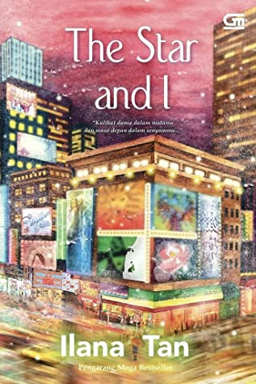

| Home | Best Seller |
|  | Judul : The Star and I Penulis : Ilana Tan Cetakan : Pertama, 2021 Jumlah Halaman : 344 halaman Penerbit : Gramedia Pustaka Utama Harga : Rp99.000 |
Sinopsis Novel The Star and I |
| Novel The Star and I mengisahkan polemik kehidupan Olivia Mitchell, seorang aktris Broadway asal Skotlandia, yang berbakat dan terkenal di New York.
Olivia merupakan anak yang diangkat oleh keluarga Mitchell dari sebuah panti asuhan yang berlokasi di New York. Sejak kecil, Olivia Mitchell mencari informasi mengenai siapa orang tua kandungnya. Bukan karena ia tidak mencintai orang tua angkatnya, melainkan ingin menemukan jawaban atas alasan mengapa orang tua kandungnya menelantarkannya. Suatu ketika, ia mendapat kesempatan untuk bekerja di New York untuk mewujudkan cita-citanya sebagai aktris musikal Broadway. Ia tentunya bersemangat untuk pergi ke New York, karena ia dapat sekaligus menjalankan misi pencarian orang tua kandungnya. Dalam perjalanan Olivia mencari orang tua kandungnya, Olivia bertemu dengan sahabat masa kecilnya yang juga merupakan cinta pertamanya yang gagal, Lawrence Rex Rankin. Rex kemudian membantu sahabat masa kecilnya itu untuk menemukan orang tuanya. Pertemuan Olivia dan Rex membuka babak baru dalam kehidupan Olivia. Rex mempermudah jalan Olivia untuk menemukan orang tua kandungnya. Pada akhirnya, Olivia pun menemukan sosok orang tua kandungnya. Walaupun pada akhirnya, kenyataan yang terjadi bertolak belakang dengan ekspektasi. Pada akhirnya pula, hubungan Rex dan Olive bertumbuh menjadi apa yang memang seharusnya terjadi sejak dulu. |
Kelebihan Novel The Star and I |
| Layaknya semua karya Ilana Tan yang telah diterbitkan sebelumnya, pada novel The Star and I ini penggambaran latar tempatnya sangat mengesankan. Ilana Tan dapat
menggambatkan latar adegan sedemikian rupa yang dapat membuat para pembaca kagum akan keindahan latar tersebut. Novel The Star and I ini memiliki fokus cerita yang memuat proses dan hasil. Fokus tersebut adalah pencarian orang tua Olivia. Hasilnya merupakan hubungan sebab dan akibat, serta penyelesaian atas fokus tersebut. Hal ini menjadi nilai tambah yang membuat cerita dalam novel ini lebih bermakna. Ilana Tan dapat menyajikan cerita dengan tema yang umum secara menarik dan unik. Gaya bercerita Ilana Tan sederhana, tapi membekas di hati para pembacanya. |
Kekurangan Novel The Star and I |
| Terdapat beberapa penjelasan detail adegan yang berulang dalam novel The Star and I ini. Hal ini dapat menimbulkan kesan mengganggu kepada pembaca, karena pengulangan detail
tersebut dinilai kurang bermakna dan membuat kalimat menjadi tidak efektif. Dinamika konflik dan alur cerita novel The Star and I ini dinilai cukup datar, sehingga tidak membuat pembaca penasaran dan antusias untuk lanjut membaca novel ini. Dalam novel karya Ilana Tan ini terdapat beberapa adegan yang dinilai bertele-tele, karena kurangnya konteks dan esensi adegan tersebut. Adegan yang tidak bisa dihayati dan didalami secara emosional oleh para pembaca. Pendalaman dan perkembangan karakter beberapa tokoh dalam novel ini dinilai kurang. Beberapa karakter dinilai sangat mirip dengan karakter dalam karya-karya Ilana Tan yang diterbitkan sebelum novel ini. |